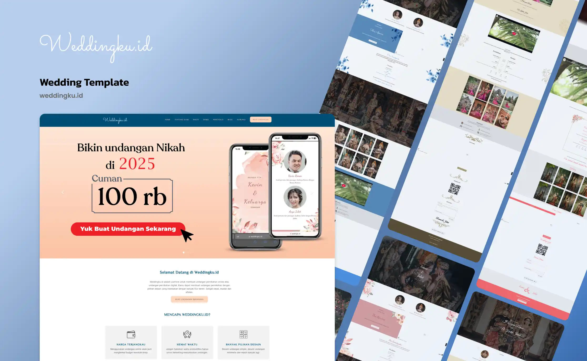

Pernikahan adalah momen berharga yang membutuhkan banyak persiapan. Weddingku hadir sebagai platform pembuatan undangan daring yang mendemokratisasi akses teknologi bagi calon pengantin. Melalui platform ini, siapa saja dapat memiliki undangan digital yang elegan, instan, dan ramah di kantong tanpa mengorbankan kualitas visual.

Halaman penawaran utama Weddingku.id yang memfokuskan pada kemudahan dan harga yang terjangkau.
Calon pengantin sering kali dihadapkan pada alokasi dana yang membengkak saat merencanakan pernikahan. Biaya cetak undangan fisik yang berkualitas tinggi kerap menyita persentase anggaran yang cukup besar. Meskipun transisi menuju undangan digital mulai diminati oleh masyarakat luas, banyak penyedia jasa desain khusus yang masih mematok harga tinggi atau membutuhkan waktu pengerjaan berhari-hari.
Masyarakat kelas menengah ke bawah membutuhkan alternatif solusi yang praktis. Mereka mencari layanan yang mampu memberikan informasi acara secara lengkap kepada tamu, menyajikan galeri foto yang indah, serta memiliki tampilan yang elegan tanpa harus menguras tabungan pernikahan mereka.
Weddingku dirancang untuk menyelesaikan kesenjangan harga tersebut. Platform ini beroperasi dengan model bisnis bisnis ke konsumen yang berpusat pada penggunaan templat siap pakai. Dengan menstandardisasi struktur kode penyusun undangan, proses pembuatan yang sebelumnya memakan waktu berhari-hari dapat dipangkas menjadi hitungan jam. Hal ini memungkinkan platform untuk menekan harga jual hingga batas yang sangat terjangkau bagi semua kalangan.
Desain antarmuka memegang peran krusial dalam meyakinkan calon pelanggan. Oleh karena itu, perancangan antarmuka dibagi menjadi dua ranah utama, yaitu halaman promosi untuk memicu transaksi dan antarmuka templat undangan untuk memanjakan mata para tamu.
Halaman Penawaran yang Persuasif: Halaman utama dirancang menggunakan komposisi warna pastel seperti persik dan biru muda yang hangat. Tombol ajakan bertindak dibuat tebal dengan warna merah
mencolok yang menyertai tipografi harga transparan. Hal ini bertujuan untuk langsung menangkap ketertarikan visual pengunjung seketika mereka membuka situs web.
Katalog Desain Tematik: Berbeda dengan aplikasi manajemen inventaris yang bersifat baku, portofolio desain pada Weddingku mengedepankan keberagaman selera. Saya merancang berbagai templat
mulai dari tema bunga yang manis, gaya elegan minimalis, hingga tata letak yang menonjolkan foto adat tradisional.
Optimalisasi Layar Genggam: Struktur undangan diprogram secara spesifik untuk lingkungan telepon seluler karena hampir seluruh tautan undangan akan disebar dan dibuka melalui aplikasi pesan
singkat WhatsApp.
Di balik tampilan yang memukau, Weddingku disokong oleh rekayasa perangkat lunak yang memastikan seluruh fitur esensial pernikahan berjalan secara mulus. Pemanfaatan bahasa pemrograman web modern digunakan untuk mengintegrasikan kebutuhan logistik acara ke dalam satu tautan.
Fitur utama yang ditanamkan ke dalam kerangka templat meliputi sistem buku tamu untuk konfirmasi kehadiran secara langsung, penyematan peta digital interaktif, serta penggabungan galeri foto pasangan yang responsif. Selain itu, saya juga menyematkan modul dompet digital berupa kode QR untuk memfasilitasi pemberian hadiah dari tamu yang berhalangan hadir.
Menawarkan alternatif ekonomis dibandingkan metode cetak konvensional.
Pemanfaatan sistem templat memangkas waktu produksi secara signifikan.
Desain yang ramah seluler memastikan informasi tersampaikan dengan utuh kepada seluruh tamu.
Sebagai kesimpulan, Projects Weddingku merupakan bukti nyata bahwa desain yang indah dan fungsionalitas yang tinggi tidak selalu harus ditebus dengan harga yang mahal. Melalui perancangan antarmuka yang strategis dan efisiensi penulisan kode, produk teknologi dapat bertransformasi menjadi solusi massal yang membantu meringankan beban masyarakat pada hari bahagia mereka.